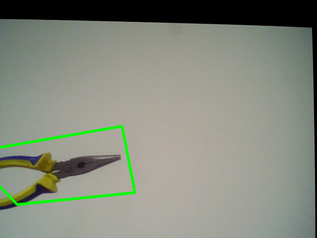

Data de realização dos experimentos: [21/07/2025]
Data de publicação do relatório: [28/07/2025]
A detecção e descrição de características em imagens é uma área importante da Visão Computacional. As chamadas features são pontos de interesse que ajudam a identificar objetos, comparar imagens e entender o conteúdo visual de uma cena. Elas podem ser cantos, bordas ou regiões com textura, e são usadas em várias aplicações como reconhecimento de objetos, rastreamento e reconstrução 3D.
Algoritmos como o Detector de Harris e o Shi-Tomasi identificam cantos em imagens, que são bons pontos para acompanhar objetos. Já o SIFT (Scale-Invariant Feature Transform) vai além, encontrando pontos de interesse que resistem a mudanças de escala, rotação e iluminação.
Além disso, técnicas como Feature Matching com Homografia permitem encontrar o mesmo objeto em imagens diferentes, mesmo que ele esteja em posições ou ângulos distintos. Também estudamos a Transformada de Hough, que é usada para detectar formas simples como linhas e círculos em imagens.
Neste trabalho, realizamos experimentos práticos com essas técnicas usando a biblioteca OpenCV, tanto com imagens gravadas quanto com vídeo em tempo real, para entender como essas ferramentas funcionam na prática.
Através do código abaixo foi realizado o reconhecimento do objeto no vídeo utilizando a metodologia.
def detectar_objeto_video():
print("Carregando parâmetros de calibração...")
# Carrega parâmetros de calibração
cv_file = cv2.FileStorage("data/params_py.xml", cv2.FILE_STORAGE_READ)
Left_Stereo_Map_x = cv_file.getNode("Left_Stereo_Map_x").mat()
Left_Stereo_Map_y = cv_file.getNode("Left_Stereo_Map_y").mat()
Right_Stereo_Map_x = cv_file.getNode("Right_Stereo_Map_x").mat()
Right_Stereo_Map_y = cv_file.getNode("Right_Stereo_Map_y").mat()
cv_file.release()
# Carrega imagem de referência
nome_query_image = str(input("Insira o nome do objeto a ser buscado (ex: img_obj_1.png): "))
query_img = cv2.imread(f"data/objeto/{nome_query_image}", cv2.IMREAD_GRAYSCALE)
if query_img is None:
print("Erro ao carregar imagem de referência!")
return
# Inicializa SIFT e detecta features da imagem de referência
sift = cv2.SIFT_create()
kp1, des1 = sift.detectAndCompute(query_img, None)
# Configura FLANN matcher
FLANN_INDEX_KDTREE = 1
index_params = dict(algorithm=FLANN_INDEX_KDTREE, trees=5)
search_params = dict(checks=50)
flann = cv2.FlannBasedMatcher(index_params, search_params)
# Captura de vídeo das câmeras estéreo
indices = detectar_cameras()
if len(indices) < 2:
print("Menos de duas câmeras detectadas.")
return
CamL = cv2.VideoCapture(indices[0])
CamR = cv2.VideoCapture(indices[1])
print("Buscando objeto... Pressione ESC para cancelar manualmente.")
count = 0
while True:
retL, frameL = CamL.read()
retR, frameR = CamR.read()
if not retL or not retR:
print("Erro ao capturar frames.")
break
# Remapeia para remover distorções
Left_nice = cv2.remap(frameL, Left_Stereo_Map_x, Left_Stereo_Map_y, cv2.INTER_LANCZOS4)
Right_nice = cv2.remap(frameR, Right_Stereo_Map_x, Right_Stereo_Map_y, cv2.INTER_LANCZOS4)
# Converte imagem da esquerda para escala de cinza
scene_gray = cv2.cvtColor(Left_nice, cv2.COLOR_BGR2GRAY)
kp2, des2 = sift.detectAndCompute(scene_gray, None)
if des2 is None or len(des2) < 2:
continue # pula frame se não houver descritores suficientes
try:
matches = flann.knnMatch(des1, des2, k=2)
except cv2.error as e:
print("Erro ao fazer knnMatch:", e)
continue
# Lowe ratio test com mais rigor
good = []
for m, n in matches:
if m.distance < 0.6 * n.distance: # menos tolerante
good.append(m)
MIN_MATCH_COUNT = 12 # Mais exigente
print('good',len(good))
if len(good) >= MIN_MATCH_COUNT:
src_pts = np.float32([kp1[m.queryIdx].pt for m in good]).reshape(-1, 1, 2)
dst_pts = np.float32([kp2[m.trainIdx].pt for m in good]).reshape(-1, 1, 2)
M, mask = cv2.findHomography(src_pts, dst_pts, cv2.RANSAC, 5.0)
if M is not None:
h, w = query_img.shape
pts = np.float32([[0, 0], [0, h], [w, h], [w, 0]]).reshape(-1, 1, 2)
dst = cv2.perspectiveTransform(pts, M)
# Desenha a caixa no objeto detectado
Left_nice = cv2.polylines(Left_nice, [np.int32(dst)], True, (0, 255, 0), 3, cv2.LINE_AA)
# Salva a imagem com detecção
count += 1
path = f"data/objeto/deteccao_{count}.png"
cv2.imwrite(path, Left_nice)
print(f"✅ Sucesso ao achar o objeto! Imagem salva em: {path}")
# Mostra resultado rapidamente
cv2.imshow("Detecção Final", Left_nice)
cv2.waitKey(1000)
break # Encerra após detectar com sucesso
# Mostra os frames ao vivo
cv2.imshow('Left Camera - Object Detection', Left_nice)
cv2.imshow('Right Camera', Right_nice)
# ESC = sair manualmente
if cv2.waitKey(1) & 0xFF == 27:
print("Encerrado manualmente pelo usuário.")
break
CamL.release()
CamR.release()
cv2.destroyAllWindows()

Etapa 2 - Etapa 3 - Etapa 4 -[Apresente os resultados obtidos, discuta os comportamentos observados, gráficos, imagens ou tabelas relevantes.]
[Resuma os aprendizados obtidos, os resultados alcançados e possíveis melhorias para trabalhos futuros.]